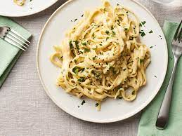

Alfredo Sauce

Description
Here’s a brief overview of what you can expect when you make Alfredo sauce from scratch:
Melt the butter, then stir in the cream and simmer.
Whisk in the cheese and garlic until heated through and smooth.
Stir in the parsley.
Ingredients
- ¼ cup butter
- 1 cup heavy cream
- 1 ½ cups freshly grated Parmesan cheese
- 1 clove garlic, crushed
- ¼ cup chopped fresh parsley
Steps
- Before you start making the sauce, go ahead and prep any other ingredients you'll be using in your dish (like pasta and chicken). Your sauce will be ready to toss and serve as soon as it's done cooking.
- Melt butter in a saucepan over medium-high heat, then whisk in the cream cheese and garlic powder. When the first three ingredients form a smooth sauce, start gradually whisking the milk into the mixture. It's important to add the milk a little at a time to prevent lumps and to ensure a thick texture.
- Toss the sauce with pasta, chicken, and/or other ingredients that are necessary for your dish. Serve immediately.